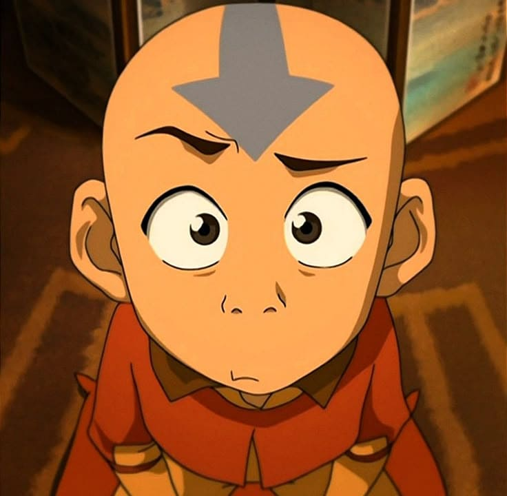
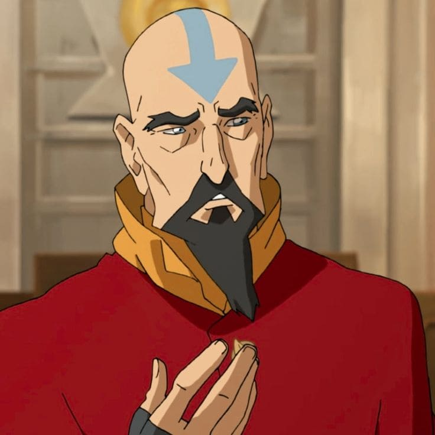
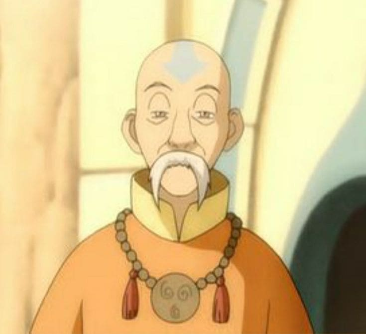

.png)
Sua força está na flexibilidade e na capacidade de enxergar possibilidades onde outros veem bloqueios. Você não gosta de confronto direto e tende a contornar situações ao invés de enfrentá-las de forma rígida. Assim como a dobra de ar, sua essência está no movimento, na criatividade e na liberdade — você funciona melhor quando não está preso(a).
Aang O protagonista da série e o Avatar responsável por trazer equilíbrio ao mundo após 100 anos de guerra. Aang foi criado como monge nos Templos de Ar, sendo um mestre de dobra de ar extremamente talentoso — aos 12 anos, já havia conquistado os tatuagens de mestre (algo raro, pois normalmente exigiam décadas de treino). Sua filosofia de vida é baseada nos ensinamentos nômades do ar: liberdade, não-violência, desapego material e espiritualidade. A dobra de ar de Aang é rápida, evasiva e criativa: ele usa seu cajado glitch (que também é um planador) para amplificar seus movimentos, cria tornados, rajadas de vento, bolhas de ar para prender oponentes (ou para mergulhar), e até corre sobre a água com passos leves que não afundam. Um traço único de Aang é que ele nunca mata — mesmo no confronto final com Ozai, ele remove a dobra de fogo do vilão (energobending) em vez de assassiná-lo. Aang também é o último sobrevivente dos Nômades do Ar (até descobrir que não é bem assim no final da série, mas quase todos foram mortos). Sua conexão com o mundo espiritual é a mais profunda entre os Avatares recentes.


Tenzin Filho mais novo de Aang e Katara (e o único dos três filhos de Aang a herdar a dobra de ar — seus irmãos Bumi e Kya são, respectivamente, não-dobrador e dobradora de água). Tenzin é o mestre de dobra de ar da nova geração e mentor de Korra (que tem dificuldade com o elemento ar). Ele é sério, disciplinado, um pouco rígido e carrega o peso de ser o "último" mestre de ar (até a 3ª temporada, quando novos dominadores de ar surgem). Tenzin tenta honrar o legado do pai, mas também se cobra demais. Sua dobra de ar é poderosa, técnica e refinada — ele usa tornados, rajadas precisas, salto levitado e até a técnica de vôo (embora não tão bem quanto Zaheer). Durante a batalha contra o Lótus Vermelho, Tenzin enfrenta sozinho Zaheer (dominador de ar) e claramente é superior — mas é derrotado porque os outros membros do Lótus Vermelho (P'li, Ghazan e Ming-Hua) intervêm. Tenzhen (quero dizer Tenzin) também tem quatro filhos: Jinora, Ikki, Meelo e Rohan (que nasce no final da série). Ele representa a persistência da cultura nômade do ar mesmo após o genocídio.
Mestre Gyatso Um ancião do Templo do Ar do Sul, Gyatso foi o mestre pessoal de Aang e sua figura paterna. Gentil, brincalhão e amoroso, Gyatso incentivava Aang a ser feliz e não apenas cumprir seu destino como Avatar. Ele era um dos dominadores de ar mais poderosos de sua geração, capaz de criar rajadas devastadoras. Durante o ataque da Nação do Fogo ao Templo do Sul (aproveitando o Cometa de Sozin), Gyatso enfrentou sozinho um esquadrão de dominadores de fogo — seu corpo foi encontrado cercado por dezenas de soldados inimigos mortos, indicando que ele criou um vácuo de ar que os asfixiou (a dobra de ar pode remover o oxigênio de uma área). Gyatso representa a tristeza e o trauma do genocídio dos Nômades do Ar.
